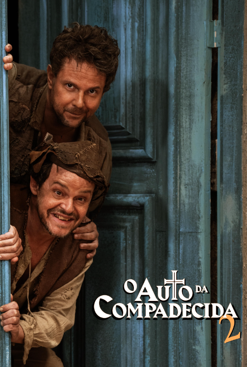

Casa Comigo
Em Casa Comigo?, Anna (Amy Adams) viaja a Dublin, na Irlanda, para pedir o namorado Jeremy (Adam Scott) em casamento. Segundo a tradição local, o homem não pode recusar um pedido feito no dia 29 de fevereiro. Após contratempos na viagem, Anna vê-se obrigada a pegar carona com o charmoso e grosseiro Declan (Matthew Goode), dono de uma hospedaria. Logo, o que deveria ser uma simples travessia ganha rumos inesperados.
08/01/2010
O Auto da Compadecida
As aventuras dos nordestinos João Grilo (Matheus Natchergaele), um sertanejo pobre e mentiroso, e Chicó (Selton Mello), o mais covarde dos homens. Ambos lutam pelo pão de cada dia e atravessam por vários episódios enganando a todos do pequeno vilarejo de Taperoá, no sertão da Paraíba. A salvação da dupla acontece com a aparição da Nossa Senhora (Fernanda Montenegro). Adaptação da obra de Ariano Suassuna.
10/09/2000
1% de Alguma Coisa
1% de Alguma Coisa” é um dorama de comédia romântica de 2016, onde Lee Jae In (Ha Seok Jin), um herdeiro rico e arrogante, enfrenta um desafio inesperado imposto por seu avô: casar-se com Kim Da Hyun (Jun So Min), uma professora gentil e altruísta, para herdar sua fortuna. O plano do avô é simples – ensinar a Jae In uma lição de humildade e amor. Dirigido por Kang Cheol Woo e baseado no romance de Hyun Go Woon, este drama é uma história cativante sobre amor inesperado, crescimento pessoal e a descoberta de que até o menor percentual de algo pode valer a pena.
20/09/2016
O Que Houve Com a Secretária Kim

Em What's Wrong with Secretary Kim, Lee Young-joon (Park Seo-joon) é o vice-presidente de uma enorme corporação. Porém, seu mundo é tirado do eixo quando sua competente secretária, Kim Mi-so (Park Min-young), anuncia sua imediata demissão de seu cargo depois de trabalhar com ele por nove anos. Lee Young-joon, então, decide que fará o que for necessário para convencer Kim Mi-so a não abandoná-lo.
26/07/2018
Parceira Suspeita
Em Parceira Suspeita, a estagiária de promotoria Eun Bong Hee (Eun Bong Hee) tem a grande chance de trabalhar em um verdadeiro caso de assassinato ao lado do famoso promotor Noh Ji Wook (Ji Chang-wook), mas as coisas acabam mudando drasticamente de rumo quando Eun se torna uma das suspeitas do caso. Noh Ji Wook logo tenta ajudar na inocência da garota, mas o verdadeiro suspeito mantém-se à espreita para evitar ser pego.
13/07/2017
A Ilha
A história do k-drama se passa na ilha de Jeju, para onde Won Mi-ho (Lee Da-hee) é enviada pelo seu pai, dono de uma grande empresa, após ela cometer um erro causado por sua arrogância e egoísmo. Quando chega ao local, a jovem começa a trabalhar como professora, mas acaba precisando lidar com algo inesperado: o mal que circula pela ilha, que é o destino de demônios capturados. Ao lado de Won Mi-ho está Ban (Kim Nam-gil), um imortal que tem protegido a humanidade de seres malignos há milênios, e Johan (Cha Eun-woo), um jovem padre destinado a purificar o mundo através do exorcismo de pessoas possuídas. Juntos, eles se unem e lutam contra tudo o que há de sombrio em Jeju.
30/12/2022
Mundo Maravilhoso

Wonderful World (Mundo maravilhoso) conta a história de Park Ha Na, uma mãe enlutada em uma missão angustiante em busca de justiça pelo trágico falecimento de seu filho, pelo qual o responsável foi perdoado pela lei. Em sua jornada, ela cruza o caminho de um misterioso estudante de medicina, jovem e corajoso, determinado a protegê-la a qualquer custo, inclusive arriscando sua própria vida. Esse estudante é interpretado por Cha Eun-woo e juntos, eles se lançam em uma perigosa e emocionante jornada de amor e redenção, enfrentando riscos imensuráveis e consequências devastadoras.
01/03/2024
Desgraça a Seu Dispor
Desgraça ao Seu Dispor acompanha Tak Dong-kyung (Park Bo-young), uma jovem que trabalha como editora de webromances. Sua vida vira de ponta-cabeça com o diagnóstico de que tem três meses de vida por conta de um tumor maligno. Amargurada pela situação, ela deseja que o mundo todo se dane, e é aí que entra a desgraça. Na história, a Desgraça em pessoa se apresenta na figura de Myul Mang (Seo In-guk), um ser celestial que oferece um trato: em troca de destruir o mundo e viver os dias que lhe restam plenamente, ela deve entregar sua alma ao Anjo da Morte. Dong-kyung aceita, mas as coisas se complicam quando a entidade imortal começa a se apaixonar por ela.
10/05/2021
Nosso Destino

O k-drama romântico “Nosso Destino” gira em torno de Jang Shin-yu (Ro Woon), um advogado que se vê aprisionado em uma maldição ancestral que assombra sua família há 350 anos. A vida do rapaz é marcada por uma série de adversidades e eventos inexplicáveis e só muda quando ele conhece Lee Hong-jo (Cho Bo-ah), uma funcionária pública com uma aparente conexão com o destino de Shin-yu. Aparentemente, Lee Hong-jo tem a chave para libertar Shin-yu de sua maldição e, à medida que o destino dos jovens se cruza, nasce um lindo e surpreendente romance que desafia todas as barreiras do tempo e do destino.
23/08/2023
Rainha das Lágrimas
'Rainha das Lágrimas'. O dorama traz a história de Hae-in (Kim Ji-won), herdeira de um império de lojas de departamento chamado Queen Group, e Hyun-woo (Kim Soo-hyun), um diretor jurídico. Os dois se apaixonam e se casam. Porém, com o passar do tempo, Hyun-woo decide pedir o divórcio. O problema é que, assim que toma a decisão, descobre que a esposa está doente. Assim, os dois começam a se reaproximar, deixando os problemas no casamento aos poucos para trás.
09/03/2024
Uma Advogada Extraordinária
Em Uma Advogada Extraordinária, Woo Young Woo (Park Eun Bin) é uma advogada de 27 anos no espectro autista. Criada pela seu pai solteiro, ela tinha apenas uma amiga na escola que a protegia dos colegas que praticavam bullying. Na vida adulta, Young Woo se tornou uma profissional excelente. Tendo um QI altíssimo, de 164, ela se formou como a melhor estudante da turma na prestigiada Universidade Nacional de Seoul. Devido à sua inteligência e memória fotográfica, ela conseguiu um trabalho em um grande escritório de advocacia se envolvendo com casos criminais incomuns e complexos. Por outro lado, emocionalmente, Young Woo não se dá muito bem com interações sociais. Como resultado, muitos a enxergam como uma esquisita ou solitária, tendo sido alvo de bullying na escola. A série tem foco no crescimento de Young Woo como advogada e pessoa, enquanto ela conhece novas pessoas que irão fazer a diferença em sua vida.
29/06/2022
Sorriso Real
Em Sorriso Real, Goo Won (Lee Jun-ho) tem seu mundo balançado, primeiro, por uma disputa inesperada por uma herança e, depois, pelo sorriso de Cheon Sa-rang (Yoon-a). Won é o herdeiro da grandiosa rede de hotéis de luxo do The King Group e, mesmo com sua mente afiada para os negócios, acaba tomando decisões precipitadas quando o assunto é do coração. Sa-rang está tão entusiasmada por ter conquistado um emprego no The King of The Land que seu sorriso não para de estampar seu rosto, algo que irrita o Goo Won profundamente.
13/07/2023